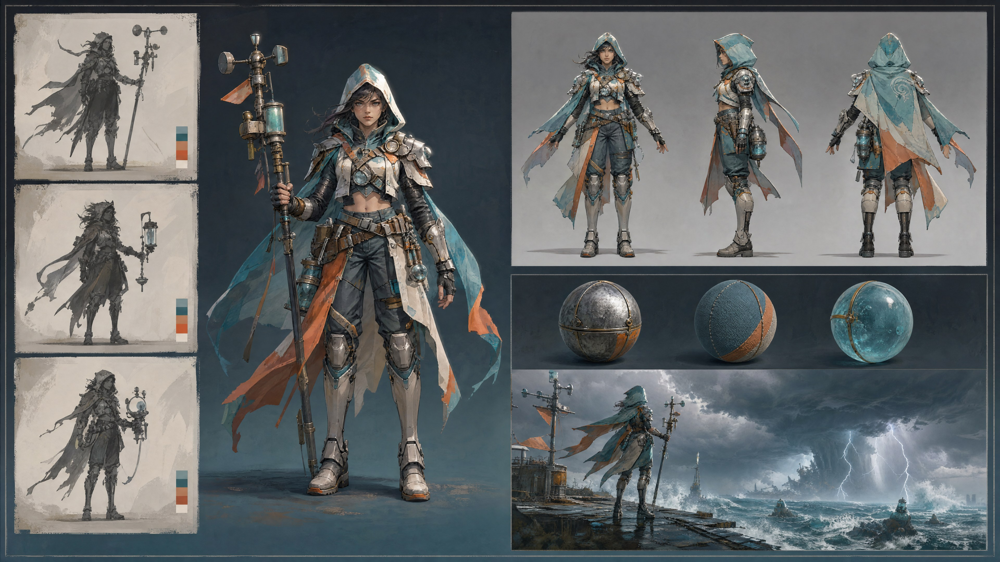

把全书的光、材质、风格与用途知识，压进一条可审查、可迭代、可交付的概念管线

本章虚构项目名为《沸点海岸》：一款第三人称团队动作游戏。近未来海滨城每年举办水上能源竞赛，玩家穿着由救生装备、冲浪器材和工业冷却件改造的战斗服，在台风来临前争夺潮汐电池。三个初始词是“澎湃战场、狂热盛夏、友好竞技”。如果直接把它们交给模型，结果多半只是海滩、爆炸和泳装的平均拼贴；项目真正需要的是一份能约束几十张图的美学定义文档。
| 三层模型 | 《沸点海岸》的决定 | 可验收的边界 |
|---|---|---|
| 审美要素（物理层） | 5600K 硬质日光从右后方切入；9000K 天光填充阴影；湿表面有掠射反射；空气含盐雾；28–35mm 的贴近感 | 受光暖、背光冷；投影方向一致；不能用无来源的全局辉光 |
| 风格要素（文化层） | 近未来体育转播图形、海上救援器材的功能主义、三色赛璐璐与少量写实材质响应 | 圆角与斜切面并存；禁止军事迷彩、末日锈蚀和无功能霓虹 |
| 应用方向（用途层） | 概念图负责解决设计问题；营销 KV 制造一次性高潮；UI 素材负责小尺寸识别 | 同一对象允许换构图与光，但轮廓、主色、功能件位置必须继承 |
色彩也要成为规则而非气氛词：海水青与漂白混凝土占约 60%，救生橙与太阳黄占约 30%，高饱和洋红仅用于敌我与技能反馈，占比不超过 10%。这样“狂热”来自受控色彩对比、斜向运动和热空气，而不是全画面同时拉满饱和度。项目的视觉句可以压缩成一句：“把海上救援的可信功能，放进盛夏体育节的高压节奏。”后续每次评审都回到这句话，而不是争论“够不够酷”。
一页项目句、三层要素表、色板比例、五条必须出现、五条禁止出现，再加三张用途样例。它的价值不在于写得长，而在于把“喜欢”改写为可被另一位美术复现、可被主美否决的条件。
第一轮不画英雄正稿，而是固定同一场景与镜头，只改变文化层，生成 3–5 个方向。本项目做四张：A 偏工业救援，B 偏塑料玩具，C 偏竞技转播，D 偏复古冲浪。每张都用同一座潮汐站、同一时间与色板，才能判断差异究竟来自风格，而不是构图运气。下面是方向 C 的完整探索提示词。
a near-future tidal power arena built across a crowded subtropical harbor, three rescue-athletes sprinting over wet modular pontoons while a turbine releases a wall of white spray behind them, hard late-morning sun from rear camera right at 5600K, crisp cast shadows toward lower left, cool 9000K sky fill inside every shadow, wet rubber with broad soft highlights, brushed aluminum with anisotropic streaks, translucent polycarbonate guards, salt-faded concrete, near-future sports broadcast graphics fused with functional maritime rescue design, three-step cel shading with physically plausible material highlights, limited palette of aqua, sun-bleached ivory and rescue orange, tiny magenta team markers only, 28mm lens, f/8, low eye level, strong diagonal movement, wide environment style exploration frame, no logos, no text --ar 16:9 --stylize 250
模型：MJ v8.1 · 画幅 16:9 · --stylize 250 · 每个方向建议生成 1 张，共 4 张进入并排评审
主体与镜头负责“澎湃”，双光源和湿材质负责“盛夏可信度”，体育转播与海上救援负责文化层，最后的 style exploration frame 明确这不是最终宣传图。四张中选择 C，不是因为它最华丽，而是因为它在灰度下仍有清楚的运动路径，并且功能件能被角色、场景和 UI 三条资产线共同继承。
选中 C 后，可将这张图作为 MJ 的风格参考，通过当前界面支持的 --sref [图像地址] 带入后续探索。要谨慎理解它：sref 是统计性的风格牵引，不是项目风格文件，也不保证色板、角色或结构逐项复制。MJ v8.1 的具体参数支持、默认强度与界面行为可能更新，应以生成当日官方文档和实际小样为准；本书不把未公开的内部权重写成精确规律。生产上仍要保留文字定义，并用固定测试题检查 sref 是否在新版本漂移。
主角“岚汐”是潮汐站维修员兼竞速手。她的识别锚点只有四个：不对称橙色浮力肩甲、左腰透明冷却罐、右腿深青护具、像浪尖一样向后的短发轮廓。锚点少而明确，模型才不必在几十个小饰件之间随机选择。先生成一张中性光、全身、轮廓清楚的英雄图；批准后再把它作为角色参考。
full-body character concept of Lanxi, a young tidal-station mechanic and competitive rescue runner, standing in a relaxed ready stance, asymmetrical rescue-orange flotation armor on her left shoulder, transparent coolant canister fixed at the left waist, deep teal guard on the right leg, short wind-swept hair forming one backward wave-tip silhouette, soft neutral key light from camera left at 5200K, broad even fill, no dramatic rim light, matte woven cooling fabric, wet semi-gloss rubber seals, satin anodized aluminum buckles, clear scratched polycarbonate canister, near-future maritime sports design, three-step cel shading with restrained realistic material highlights, orthographic-like front view, 70mm lens, full body centered with clear negative spaces around limbs, plain warm-grey background, character design approval sheet, no text --ar 2:3 --stylize 120
模型：MJ v8.1 · 画幅 2:3 · --stylize 120 · 批准图后在后续生成中追加 --cref [批准图地址]
中性光不是“不好看”，而是让肩甲、罐体和护具都可审查；70mm 减少广角透视对比例的扰动；clear negative spaces around limbs 避免手臂粘在躯干上。--cref 用来提高身份与服装锚点的连续性，但它仍可能改动配件朝向、罐体结构、手指与背面信息，不能把“相似”误当成“结构锁定”。具体可用性同样应以当前 MJ 界面文档为准。
真正的三视图不能靠一句“front, side, back turnaround”一次生成。多视图同图常出现身高变化、左右件镜像、背包凭空增减与透视不一致。可执行流程是：分别生成正、侧、背三张；每次都带同一 cref/参考图与同一份锚点文字，只替换 front view、left profile view、back view；然后由概念设计师统一人体比例、正交投影、接缝走向与功能结构。若要进建模，还必须补俯视、局部拆件、尺寸和运动干涉说明。AI 给的是候选草图，不是可直接描模的工程视图。
把三张图遮住头部，逐项核对左右不对称、带扣数量、罐体接口、护具分件线和配色面积。脸很像而装备逻辑改变，仍然是不合格；脸部轻微漂移但结构一致，反而更容易由人工修正。
风格稳定不能只靠 sref，还要有材质圣经。从第 6–9 章抽取四类材料，不写“高级材质”，而写光如何响应：救生橡胶为中高粗糙度、宽而弱的高光；拉丝铝沿加工方向产生各向异性高光；聚碳酸酯透光但有划痕与边缘反射；盐蚀混凝土粗糙、孔隙吸水后局部变暗。金色只允许出现在赛事奖章的小面积阳极氧化件上，避免鎏金把功能世界推成奢侈品广告。
a material bible contact sheet showing four separate standardized spheres and four matching flat swatches: salt-faded rescue rubber, directionally brushed anodized aluminum, scratched translucent polycarbonate, porous coastal concrete, one identical large rectangular area light from upper left at 5600K, neutral grey environment, no colored bounce, each sphere showing highlight, midtone, shadow terminator and grazing-angle reflection, rubber with a broad dim highlight and high roughness; aluminum with narrow anisotropic streaks following the brush direction; polycarbonate transmitting light with bright Fresnel edges and fine scratches; concrete with diffuse micro-shadowing, pores and irregular dark wet patches, physically descriptive game material reference, orthographic front layout, equal scale, generous spacing, no labels, no decorative props
模型：FLUX.2 · 画幅 4:3 · 固定同一输入尺寸与同一生成设置 · 无负面词
四种材质必须同光同尺度，差异才来自粗糙度、透射、菲涅尔和微表面，而不是换景造成的错觉。图可用于对齐方向，不能直接充当 PBR 贴图：它没有可靠的线性色彩、无缝边界，也没有可验证的 albedo / roughness / normal 分离。
环境概念再调用第 3–5 章的光照知识。太阳是小而硬的主光，决定清晰投影；天空是巨大的冷色面光源，填亮背光面；海水与浅色甲板提供青色、暖白色反弹光；盐雾只降低远景对比，不能把前景也洗白。先画关卡可读图，再画气氛图。
a playable near-future tidal arena spanning three harbor platforms, one clear orange route rising from lower left to the turbine objective at upper right, cover objects placed in readable clusters and two open traversal lanes, hard pre-storm sunlight breaking from rear right at 5400K, crisp cast shadows, a vast blue-grey cloud deck acting as soft 8500K fill, turquoise bounce from water under the platforms, distant towers losing contrast through salt mist, wet rescue rubber bumpers, brushed aluminum rails, scratched translucent polycarbonate wind shields, porous salt-stained concrete with darker wet zones, near-future maritime sports concept art guided by the approved style reference, 35mm lens, f/11, elevated three-quarter gameplay camera, clear value grouping, no signage, no UI, environment design approval frame --ar 16:9 --stylize 180 --sref [APPROVED_STYLE_IMAGE_URL]
模型：MJ v8.1 · 画幅 16:9 · --stylize 180 · --sref 使用第二节批准图
路线先于气氛：橙色路径、两条通道和掩体组属于应用层；双光源、反弹光和盐雾属于物理层；sref 只负责把它们牵引回共同的文化层。若删除路线句，即使画面更壮观，也可能失去关卡讨论价值。
概念设计的终点不是“出一张好图”，而是让下一环节拿到正确的信息。同一座竞技场要为三类交付重新组织，不应把一张 KV 粗暴裁切成所有渠道。
| 交付 | 首要任务 | 构图与光 | 必须人工确认 |
|---|---|---|---|
| 概念设定图 | 解决结构、功能、材质 | 中性或可解释的光；完整轮廓；少遮挡 | 尺寸、连接关系、背面、可动范围 |
| 营销 KV | 在一秒内传达冲突与品牌情绪 | 斜线、喷浪、逆光；顶部或左侧留标题安全区 | 商标、文案、法务、角色定稿一致性 |
| UI 资产 | 在 32–128 px 仍可识别 | 正交感、单一轮廓、无复杂背景与细碎高光 | 像素级描边、状态色、透明边缘、引擎导入 |
Lanxi launching from a collapsing tidal ramp toward a rival team, one hand reaching for a glowing tide battery while a turbine-driven wave erupts behind, the approved orange shoulder float, left-waist transparent coolant canister and right-leg deep teal guard all clearly visible, hard 5000K backlight piercing spray from upper right, cool 9000K storm-sky fill, controlled bloom only around sunlit droplets and the battery, wet rubber broad highlights, anisotropic aluminum streaks, scratched polycarbonate reflections, near-future maritime sports spectacle, three-step cel shading with realistic material response, 24mm lens, low tilted camera, strong lower-left to upper-right diagonal, characters occupying the lower two thirds, clean negative space in the upper left for title and rating marks, horizontal marketing key art, no embedded text --ar 16:9 --stylize 300 --sref [APPROVED_STYLE_IMAGE_URL] --cref [APPROVED_LANXI_IMAGE_URL]
模型：MJ v8.1 · 画幅 16:9 · --stylize 300 · 使用批准的 sref 与 cref；参数可用性以当日官方界面为准
与环境概念相比，24mm、低机位、斜构图和逆光喷浪把情绪推高；但角色四个锚点仍逐字保留，左上安全区也写入用途层。最终 LOGO、分级标、文案和版式应由设计软件添加，不能让生成图里的伪文字进入交付。
AI 能做的：在数小时内完成多个风格方向的发散；快速提供色彩、光照和构图假设；生成情绪图供团队讨论；在明确约束下给局部设计候选。AI 不能做的：直接产出可投产资产；保证跨镜头、跨视图的严格一致；给出结构有效、尺寸闭合的真三视图；替代材质标定、拓扑、绑定、关卡指标和法务审查。成熟流程不掩盖这些缺口，而是把 AI 放在“发散与候选”环节，把批准、统一和工程化留给人。
生成图常在整体气氛上完成度很高，却在接口、左右关系、透视、文字和物理结构上局部失真。高完成度会降低审查者警觉，因此每张图都要经历灰度层级、轮廓、结构、材质、光源、用途六项检查，不能只问“好不好看”。
[同一主体与动作], [同一环境与时间], [主光方向、软硬、色温] + [填充光来源与色温], [3–4 种材料及各自高光/透射/粗糙度特征], [候选文化指称与造型语言], [限定主色、辅色、点缀色及面积], [固定焦距、机位、画幅], style exploration frame, no text [模型参数；每轮只替换“候选文化指称”]
full-body [角色名、职业、姿态], [3–5 个不可变身份/装备锚点，含明确左右位置], neutral [色温] key light, broad even fill, [织物/金属/透明件的物理响应], [批准的风格定义], [front view / left profile view / back view 三次分别生成], 70mm, full body centered, plain background, character approval sheet, --cref [批准英雄图地址] [当前版本确认可用的参数]
[批准主体与结构锚点], [交互或叙事动作], [继承项目光照规则], [继承材质圣经], [继承风格参考], concept: neutral light, complete silhouette, readable construction; marketing KV: dramatic action, controlled effects, title safe area; UI asset: orthographic, isolated silhouette, transparent-background-ready, [焦距、机位、目标画幅、禁止项] [当前模型参数]
最后把流程固定为七个动作：写三层定义 → 做四向探索 → 批准并记录 sref → 批准角色英雄图并建立 cref → 分张生成视图后人工统一 → 建材质圣经与环境规则 → 按交付类型重写应用层。这条链路的核心不是某个参数，而是每一步都有输入、有批准物、有失败判据。模型升级时参数会变，定义、物理与用途约束仍然有效——这正是整本书最终要建立的能力。
概念设定进入动态预演前，要把批准图从“参考”升级成风格圣经。参考图只告诉团队一个可能结果；风格圣经则说明哪些机制必须继承、允许漂到哪里、何时应当否决。对《沸点海岸》，最小版本应包含世界光源图、角色锚点表、Color Script、材质响应、镜头语法、特效预算、禁用项以及统一的测试镜头。生成模型或版本改变时，先跑测试镜头，不要直接在正片里发现漂移。
| 圣经模块 | 《沸点海岸》的锁定项 | 容差 / 可变项 | 失败判据 |
|---|---|---|---|
| 角色 | 左肩橙甲、左腰罐、右腿深青护具、浪尖短发 | 湿度、污损、表情、姿态 | 任一配件镜像或在切镜后消失 |
| 世界光 | 太阳右后 5600K、天空 9000K、海水青色反弹 | 云遮造成一档以内缓变 | 投影反向，或无来源轮廓光黏住角色 |
| 色彩脚本 | 训练段青白、比赛段橙青、台风段蓝灰加小面积洋红警报 | 镜内随事件渐变 | 每镜自行选最好看的主色 |
| 镜头语法 | 玩法 35mm 稳定机位，高潮 24–28mm 低机位 | 焦距在规定区间内变化 | 无动机越轴，或同场景空间尺度跳变 |
| 统一后期 | 共同黑位、高光滚降、细颗粒尺度 | LUT 强度按镜微调 | 靠强 LUT 掩盖源帧白平衡错误 |
参考片逆向工程要分三轮。第一轮静音看 20–30 个关键帧，只记明度分组、色彩面积、焦距倾向和构图轴线；第二轮逐镜看运动，记录相机何时动、主体何时动、剪辑靠动作还是视线衔接；第三轮寻找反例，确认参考片何时故意破坏自己的规则。最后把观察改写成“机制 + 范围 + 禁用项”，并用完全不同的角色与场景复测。若换题材后风格消失，说明你提取的是海滩、盔甲等内容标签，而不是视觉语法。
[PROJECT LOCK — paste unchanged] Lanxi anchors: orange armor on LEFT shoulder, clear canister on LEFT waist, deep-teal guard on RIGHT leg, one backward wave-tip hair silhouette; world light fixed rear-right, warm hard sun plus cool sky fill; controlled aqua/ivory/orange palette, magenta only for warning feedback; three-step cel shading, material highlights remain physically responsive; [SHOT 12 — change only this block] continue the rightward sprint from shot 11, foot lands on the orange lane marker, 35mm camera tracks on the same side of the action axis for four seconds, end with the turbine centered as the match cut target for shot 13
身份断裂看左右锚点与轮廓，回到角色参考和文字锁；空间断裂看轴线、地标与动作接点，回到平面图和首尾帧；风格断裂看明度、边缘、材质高光和颗粒，不要只看色相；调色断裂先统一曝光与白平衡，再测试 LUT。四类问题不要同时用“提高参考强度”处理——参考过强可能保住脸，却冻结动作、复制构图并把错误一并放大。